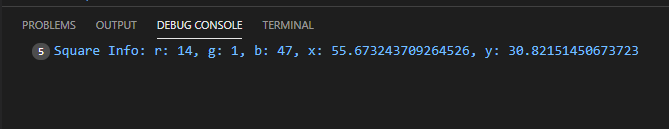
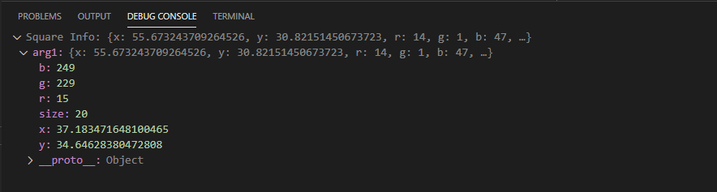
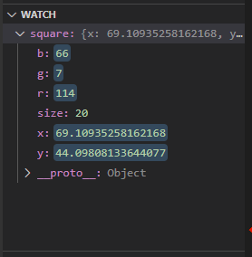

Tracking Values
The main use of console.log is to check on certain values or write messages that indicate if the code has gone through a certain point. We can do that much more easily using the Log Message option when editing a breakpoint to create a logpoint.
To create a logpoint, start by creating a breakpoint as you usually would. Then right click the breakpoint and click 'Edit Breakpoint' just like how you did for creating Expressions. Now select 'Log Message' instead of 'Expression'.

Using the logpoint, we can type in a message at any point in the code. NOTE: we cannot set a breakpoint on top of a logpoint. If there is an expression or hit count set, it will override the logpoint and no message will appear.
With the logpoint you can also print values as you would using console.log by adding {} around your variables.

Why use this?
Logpoints are not lines of code added to your program. They simply log values on the side. The main benefit
is that they will not make a mess in your code unlike using console.log() all the time and can all
be removed easily in the BREAKPOINTS tab as mentioned before.
Box (Exercise): Logging
Below is a square going in circle which can be found in 4-1.js.
Let us add the following logpoint to line 40:
Square Info: r: {square.r}, g: {square.g}, b: {square.b}, x: {square.x}, y: {square.y}
Refresh the page and we will be able to see message logged at in the Debug Console in the lower tab of VS Code. You can also see this logged in the Window as well if you press Ctrl + Shift + i and look at the console there. The message should look like this:
This seems like a somewhat tedious thing to type though. So instead, we can try logging the square directly. Let's replace the logpoint message we made with this one below:
Square Info: {square}
When we run this, it will log the values of the square variable directly. We can click the little carrot on the left of the variable in the debug console to see all it's values. It should look like this:
You will notice that the values greyed out are the same but the ones below those are off. This might be that because we are logging an object, there may be a delay in how it logs the values. Meaning it may try log the square then, but will finish logging after some of the animation has occurred. You will notice that those values change everytime we refresh.
If we added a breakpoint on line 42, those values should be accurate since the code will pause before any changes happens to the square, and it will accurately log the square at that time.
Note: this is also the same if we were to use the console.log() function.
Loops
Here we logged the square before we entered the animation loop. If you were to put this same logpoint somewhere in the animation loop such as on line 43, you will notice that you will get swarmed by messages updating you on the values of the square. This may be useful, but there is much cleaner way to keep track of certain values shown below.
Note: if you add logpoints in this animation loop, you do not need to refresh that page after it has already started running, because you will reach that breakpoint again.
Watching Values
In the debug tab, there are three sections: Variables, Watch, and Call Stack. We already talked about the call stack, but not the other two.
Variables contains all the variables currently saved while running your program. If we pause our program
in the debugger, all the variables will show up. Variables will also show anytime we hit a breakpoint.
We can find the variables we want to observe in here and we can also modify it. Try modifying t
after pausing the program and continue. You will notice that the square will jump positions.

Watch holds the variables we wish to constantly track. If we right click on a variable in Variables, we can 'Add to Watch'. Add the square to Watch. Anytime we stop the program (either by breakpoint or pause), we can see the square's information displayed in watch the same as how we logged it earlier. It should look something like this:

This program runs an animation loop in the animate() function. You can
set a breakpoint on line 43 and keep continuing iteratively to see how the square changes
on each animation frame.
Also feel free to try the things from the previous pages on this page such as expressions and stepping.
Summary
Essentially, you can still log messages and values in the console when you need to. Hopefully
doing it this way will prove to be faster and also leave less of a mess compared to calling the console.log() function.
Also watching values should also be useful since you don't have to constantly log
values at various points in time during your code.